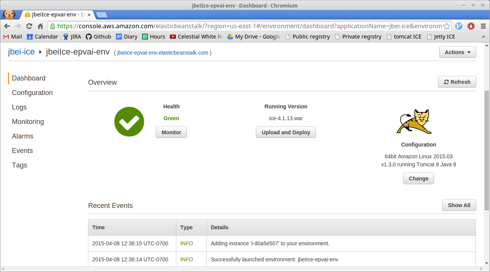
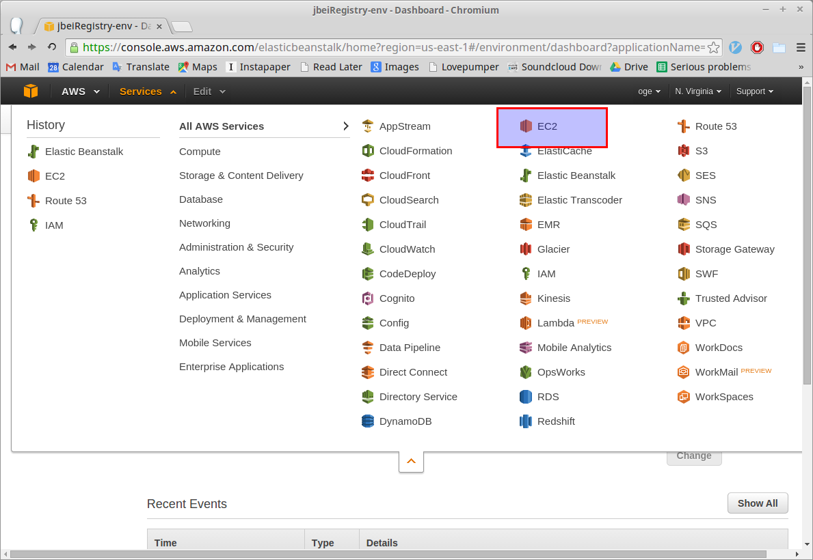
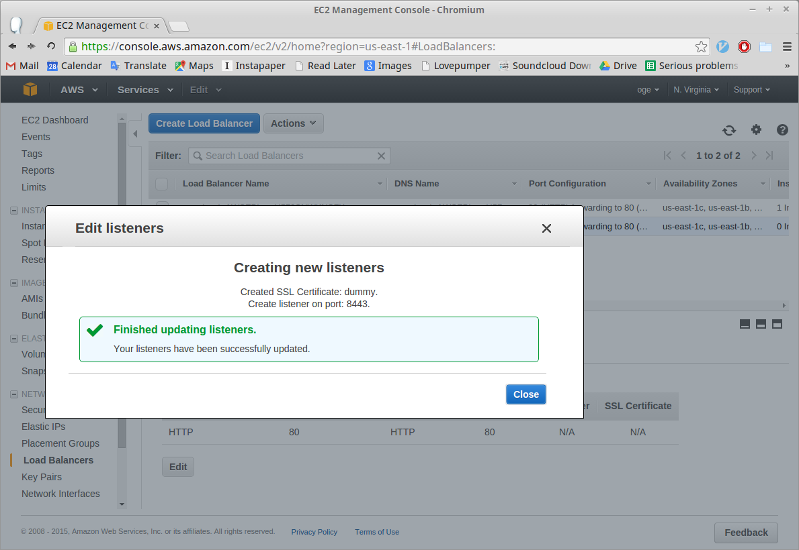
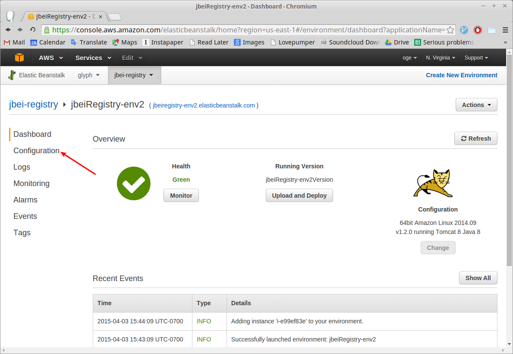
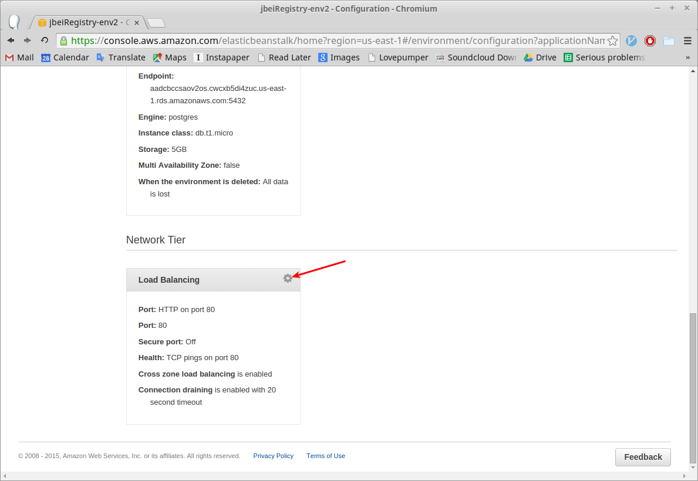
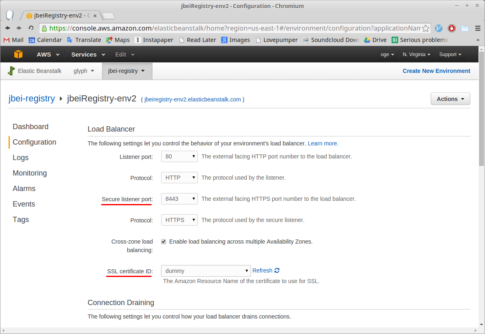
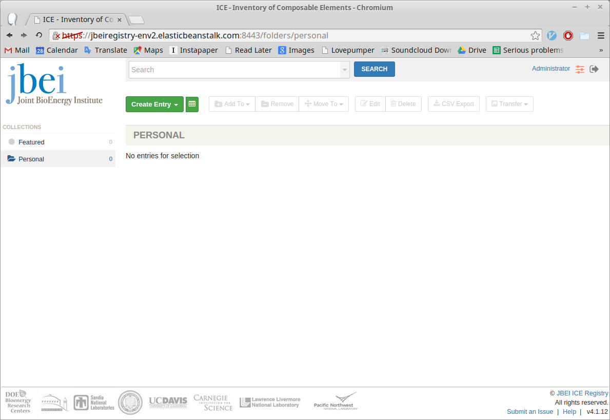

Deploying ICE to AWS¶
The process takes about an hour to complete. You’ll need
We’ve included a dummy SSL certificate that you can use while testing out the intallation process. Note that using the dummy certificate will allow anyone in the world to view all your ICE repository data, in which case you might as well use the public ICE registry.
Start the application¶
- Start a new ICE application by clicking this link. This will create the application in Amazon’s Eastern U.S. servers which are accessible worldwide. If you need your ICE instance to run in a particular geographic location, please let us know here here.
- Enter a unique name for your application—something like
“[institution-name]-ice”—and then click Review and Launch.

- On the RDS Configuration page, set DB engine to postgres.
For the username, enter “tomcat”, and then choose a secure password.
Click Next.
- Note that you may need the username and password to recover your
registry’s database in case of a catastrophic failure.

- Note that you may need the username and password to recover your
registry’s database in case of a catastrophic failure.
- Click Launch on the Review page. It will take 30 minutes to an hour for the application to fully launch. When it is done, you’ll see a green checkmark on the page. 
Configure the application¶
Before you can use the application you need to upload your SSL certificate to AWS.
- Go to the EC2 site via the Services menu at the top of the page. 
- Click Load Balancers in the left-hand menu.

- Select your load balancer from the table and then click the
Listeners tab in the pane that appears at the bottom of the page
and then click the Edit button.

- In the Edit listeners modal window click Add.
- In the new row that appears, under Load Balancer Protocol, ch
oose HTTPS (Secure HTTP). Change the Load Balancer Port
to 8443.

- Under SSL Certificate click Change. A Select
Certificate modal window will pop up. For Certificate Type
select Upload a new SSL Certificate.
- If you’re using an SSL certificate that you bought, enter “server” for the certificate name. Otherwise enter “dummy”. We’ll assume that you’re using a dummy certificate from here on out, but the instructions for setting up a real certificate are mostly the same.
- Paste your private key and public key certificate into the corresponding textboxes. Here is a dummy private key and a dummy public key certificate.
- If you have an optional certificate chain, enter it as well.
- Click Save.

- Click Save again at the Edit listeners modal window, and when you see the success message, click Close. 
- In the new row that appears, under Load Balancer Protocol, ch
oose HTTPS (Secure HTTP). Change the Load Balancer Port
to 8443.
- Now we need to tell the application to use the SSL certificate that we just uploaded. Go back to the Elastic Beanstalk site (Services > Elastic Beanstalk) and click on Configuration in the left-hand menu. 
- Scroll down to the Network Tier section and click on the gear icon of the Load Balancing card. 
- Change Secure listener port to 8443 and the SSL Certificate ID to the name of the certificate you uploaded. Click Save. 
- Once Elastic Beanstalk is done updating the environment, we’re ready to use the application.
- Click the link next to the name of your application and environment.
It will look like “jbeiregistry-env.elasticbeanstalk.com”.

- Once you ignore the security warning (since you’re using a dummy
certificate), you should see the ICE login page.

- Enter the default username, “Administrator”, and password, “Administrator”. Change the password once you login since anyone on the Internet can now access your ICE registry.
- And you’re done. 